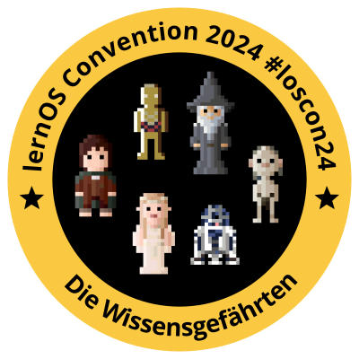

Startseite
Kommunikation
Anreise
Vorabend
Lokation
Programm
Abendprogramm
Archiv
Toolset
Discord
Hybrid Meeting Kit
Orga
Orga-Team
lernOS Convention 2024
Toolset
Hybrid Meeting Kit
Hybrid Meeting Kit
In den Breakout-Räumen wir wieder das
Hybrid Meeting Kit
der Cogneon Akademie genutzt.
« Zurück
Weiter »